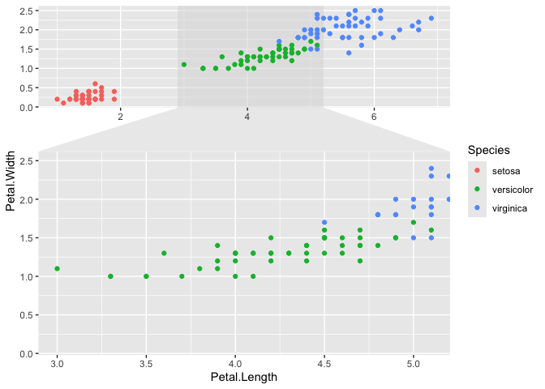

Accelerating ggplot2
ggforce is a package aimed at providing missing functionality to ggplot2 through the extension system introduced with ggplot2 v2.0.0. Broadly speaking ggplot2 has been aimed primarily at explorative data visualization in order to investigate the data at hand, and less at providing utilities for composing custom plots a la D3.js. ggforce is mainly an attempt to address these “shortcoming” (design choices might be a better description). The goal is to provide a repository of geoms, stats, etc. that are as well documented and implemented as the official ones found in ggplot2.
Installation
You can install the released version of ggforce from CRAN with:
And the development version from GitHub with:
Features
ggforce is by design a collection of features with the only commonality being their tie to the ggplot2 API. Because of this an overview of all features would get too long for a README. The package does contain a vignette where every feature is described and justified with examples and plots. There should be a plot in the README of a visualization package though, so without further ado:
library(ggforce)
#> Loading required package: ggplot2
ggplot(iris, aes(Petal.Length, Petal.Width, colour = Species)) +
geom_point() +
facet_zoom(x = Species == "versicolor")